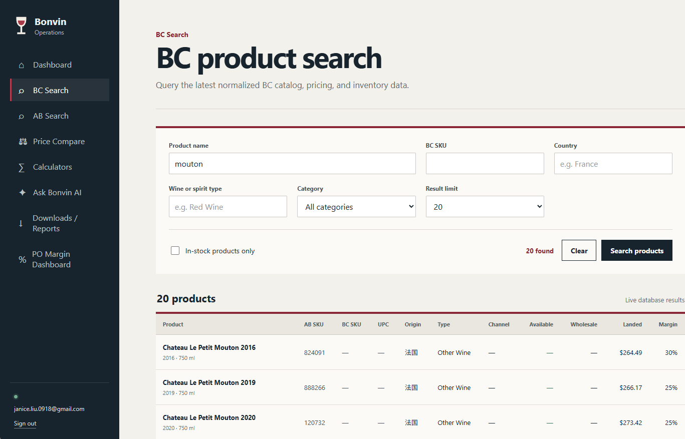
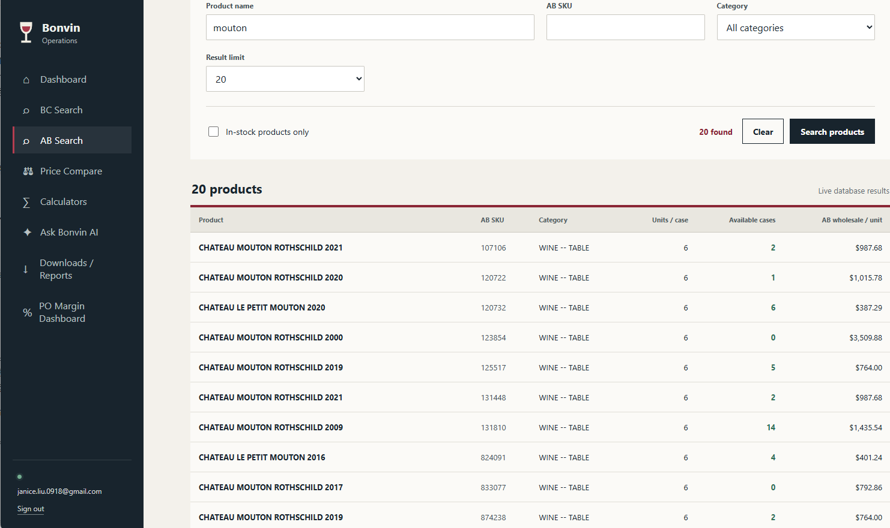
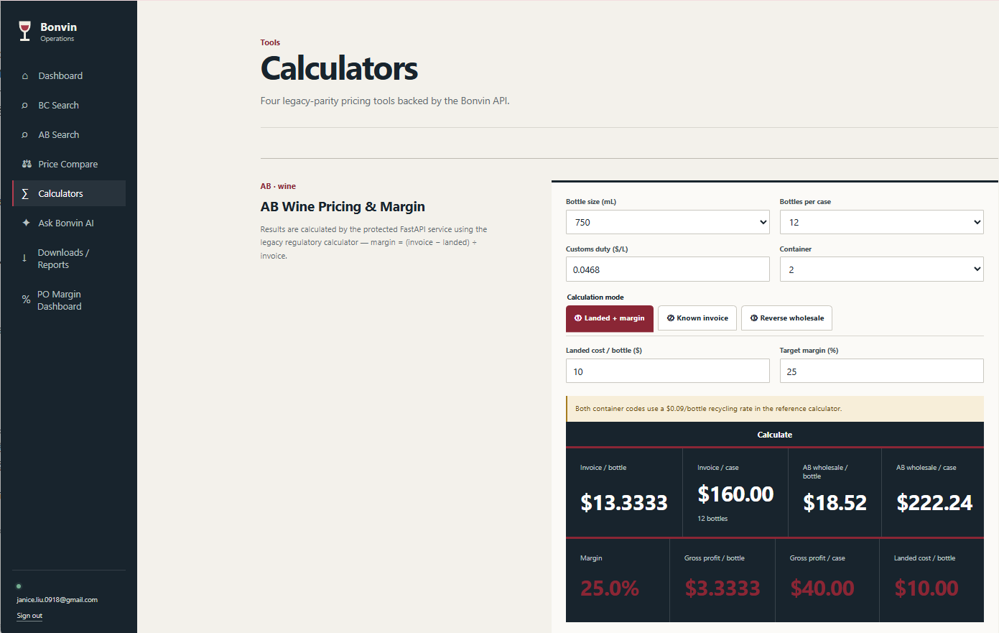
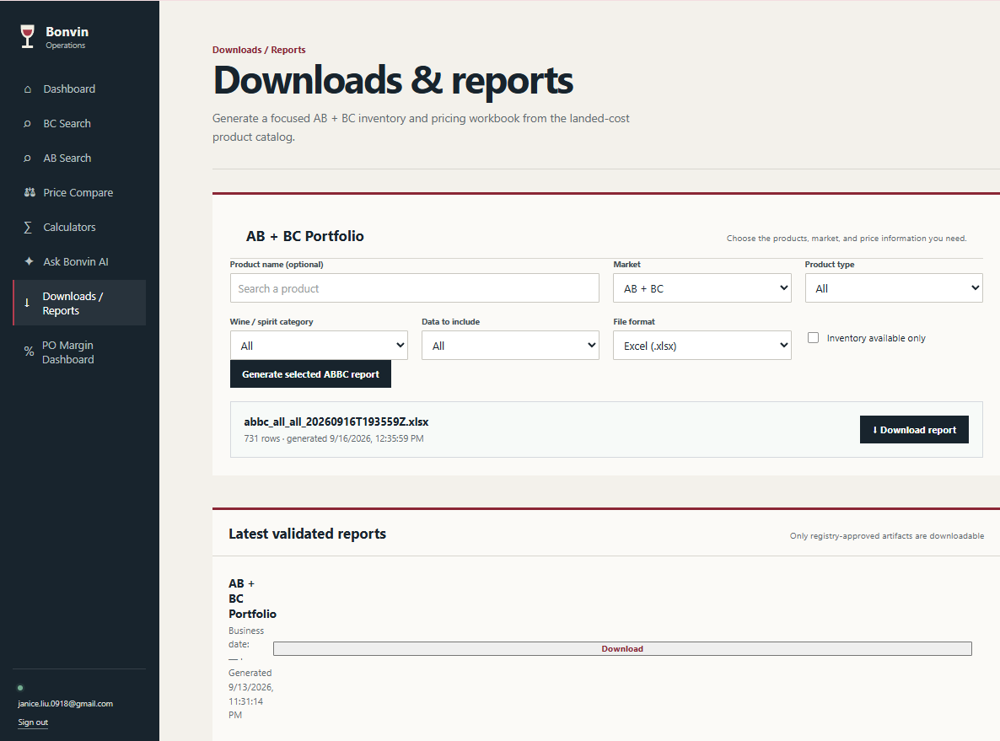
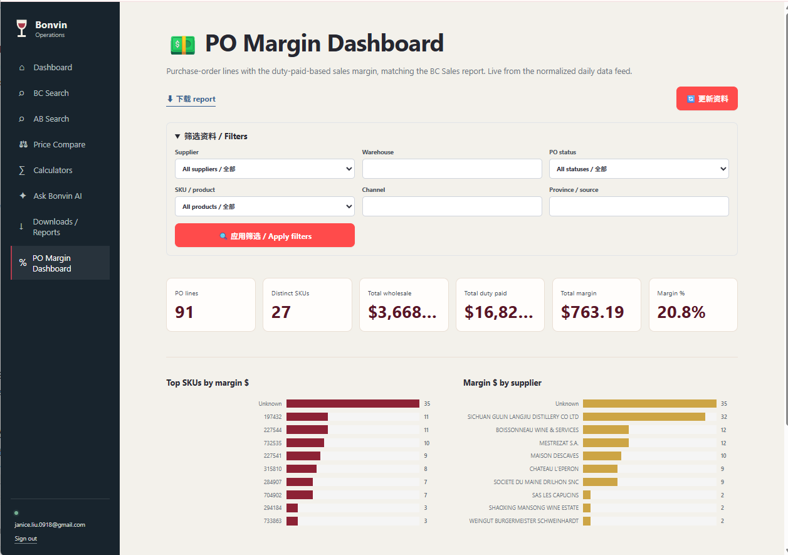

02 · CROSS-MARKET DATA
Alberta Product Search
A parallel Alberta search surface uses the same product-oriented workflow, making cross-market analysis easier.

An internal business intelligence and applied-AI platform for a Canadian wine & spirits importer/distributor — connecting product, pricing, inventory, purchase orders, reporting and grounded AI in one workflow.
Commercial and operations teams need answers across provincial product and pricing data, inventory, purchase orders, landed cost, margin logic and recurring reports. The platform turns those workflows into reusable services and a protected web application.
Each screen below represents a real workflow in the internal application.
Search normalized BC catalog, pricing and inventory data from one workspace instead of checking disconnected sources.

A parallel Alberta search surface uses the same product-oriented workflow, making cross-market analysis easier.
Compare market listings and Bonvin pricing to surface gaps, benchmarks and commercial opportunities.

Turns recurring landed-cost, wholesale-price and margin calculations into a reusable API-backed workflow.

Users can generate focused reports and retrieve validated artifacts without relying on scattered manual file handoffs.

Purchase-order and margin views connect operational status with commercial decision support.

A grounded internal AI assistant that turns natural-language questions into approved business-tool calls across product, inventory, margin and purchase-order workflows.

The product is designed as an authenticated internal workspace rather than an open operational dashboard.

The application, reporting workflows and AI layer reuse the same normalized data and business services. This reduces duplicated logic and keeps AI answers grounded in the operational system.
External business / regulatory sources
↓
Scheduled ingestion · Playwright · GitHub Actions
↓
Validation / staging
↓
Supabase / PostgreSQL
↙ ↓ ↘
FastAPI MCP tools Reporting
services read-only workflows
↘ ↓ ↙
React workspace
↙ ↘
Business users Ask Bonvin AI